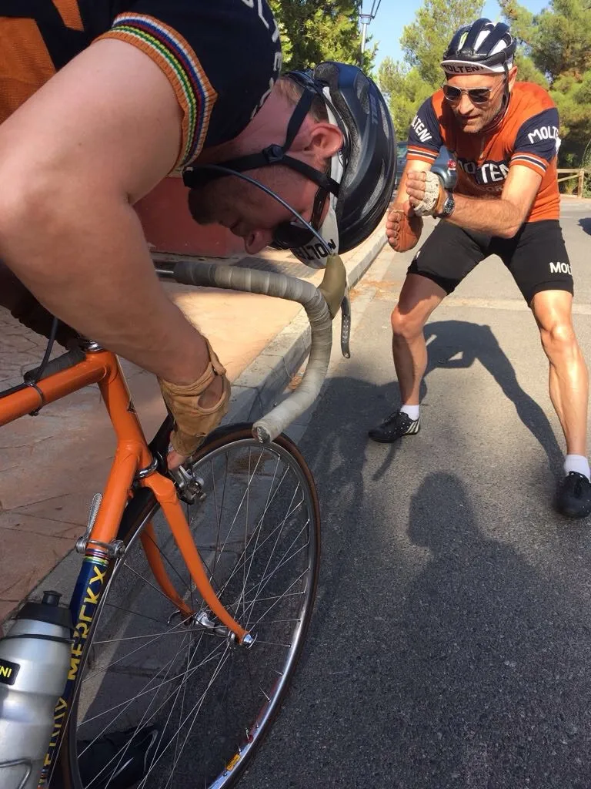
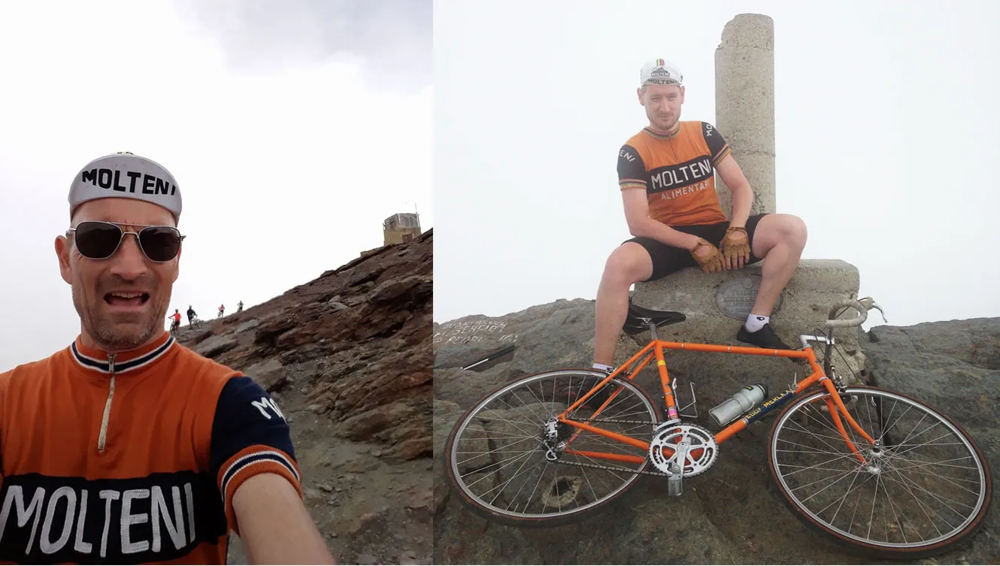

2. etape: Squadra Molteni tager den samlede sejr – Spanierne går kolde

2 etape af årets La Acero Vuelta skulle køres med afslutning på Pico del Veleta i 3395 meters højde. En afslutning hvor de sidste 5 km. bestod af gruspavéer, sten og kæmpe store skiffer.
På klassisk vis skulle løbet afgøres på en lang og stejl opstigning på næstsidste etape. I morgen er det ren paradekørsel, så der skulle holdes øje med tyskerne og spanierne fra starten.
Etapen var kort og eksplosiv. Det startede med 5 km. flad kørsel hen til sidste stigning, Pico del Veleta, der er 45 km. lang og slutter i 3400 meters højde. Kort inden start var der panik, fordi Kasper’s nye bremseklodser sad helt skævt. Niels måtte hjælpe med finjustering.

– Vi regnede med at tyskerne ville sætte en blitzkrieg ind fra bunden. Spanierne skulle forsvare deres føring, men i morges så vi fire flasker sangria ude foran deres hotelværelse her i Granada, og det kunne tydelig ses i deres kørsel fra morgenstunden, udtaler Kasper Sørensen.
Blitzkrieg-taktik fejlede igen
Tyskerne døde fuldstændig kort efter, og da først Squadra Molteni satte fra land godt flankeret af Donna Maria, der havde en travl dag i varmen som langer af iskolde flasker, og Don Mogensen som coach.
Første delmål var Sierra Nevada efter 20 km. opkørsel. Efter at have lagt i slipvinden satte Niels dødshugget ind.
– Jeg vidste at der fra Sierra Nevada kun var 25 km. til toppen med 14,8% i gennemsnit. Det svarer til min daglige opvarmning, så jeg var aldrig i tvivl om at jeg kunne holde derfra. Kasper og Maria kørte et kort lead-out, og så var jeg afsted, fortæller Niels Bjørnsteen.
Niels trak hurtigt fra, han havde endda fin tid til at indtage en grillet sandwich og nyde udsigten ved en café på vejen op. Tyskerne var helt væk. Kasper og Maria bakkede af for den spanske duo, som aldrig kom forbi, og efter sigende gik fuldstændig kolde i den tynde luft.
– Taktikken fungerede perfekt, Niels tager så meget tid, at jeg bare kan trille til toppen, og hjælpe Maria til den samlede sejr i kvindeklassen. Et par spanske senoritas kunne ikke klare mosten, og Maria trillede bare forbi uden at hilse, fortæller Kasper.

Vinder La Acero Vuelta
Squadra Molteni laver altså fuldt hus, og tager både den samlede sejr, vinder holdkonkurrence og pointkonkurrence, samt tager den samlede sejr i kvindeklassen.
– I morgen er det ren paradekørsel og champagne, så sejren er sikker. I aften skal vi bare have spansk rødvin og bøffer. Egentlig var vi bare hernede for at træne til Trofeo Molteni, udtaler en glad kaptajn ovenpå dagens sejr.
Top tre ser nu således ud.
- Bjørnsteen og Sørensen, Squadra Molteni, 58h 30′ 47”
- Miguel og Miguel, Spanien, +2h 56′ 22”
- Heniz und Schmidt, Tyskland, +9h 32′ 09”